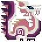
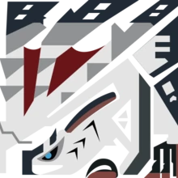
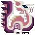
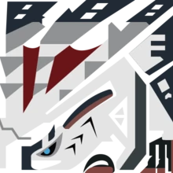

Flagships of Monster Hunter
Monster
Game
Class
Title
Description
Generation
Rathalos

Kushala Daora
Tigrex
Nargacuga
Lagiacrus
Zinogre
Brachydios
Gore Magala
Seregios
Astalos
Glavenus
Gammoth
Mizutsune

Valstrax

Flagships of Monster Hunter |
|||||
|---|---|---|---|---|---|
Monster |
Game |
Class |
Title |
Description |
Generation |
Rathalos
|
Monster Hunter | Flying Wyvern | Fire Wyvern | Male wyvern that keeps a nest and patrols its patch of territory from the air in search of prey. Its claws are filled with a poison that weakens its quarry. | First |
Kushala Daora |
Monster Hunter 2 | Elder Dragon | Steel Dragon | A metal plated dragon known as the tempest of wind. Eyewitnesses report violent storms alongside the dragon, and its wide range means towns may be attacked. | Second |
Tigrex |
Monster Hunter Freedom 2 | Flying Wyvern | Roaring Wyvern | A flying wyvern that maintains its primitive origins. Prone to violence, it possesses incredible ferocity thanks to its four limbs, claws, and jaw. Inhabits a wide area, it has even been spotted hunting Popo in the mountains. | Second |
Nargacuga |
Monster Hunter Freedom Unite | Flying Wyvern | Swift Wyvern | A uniquely-evolved wyvern that calls the forest its home. It hides itself in shadows and slyly stalks its prey with terrifying speed and tenacity. Its unique tail can take down a medium-sized monster in a single swish. | Second |
Lagiacrus |
Monster Hunter Tri | Leviathan | Sea Wyvern | Known as Sea Wyverns, Lagiacrus are at the top of the aquatic food chain. Feared by sailors as The Lords of the Seas, they store enough electricity in their spinal organs to make the oceans surge. Occasionally seen resting on land. | Third |
Zinogre |
Monster Hunter Portable 3rd | Fanged Wyvern | Thunder Wolf Wyvern | Fanged wyverns whose bodies are streaked with electricity. Sharp claws and strong limbs allow them to thrive in mountainous terrain. During hunts, they gather numerous Thunderbugs to boost their power and enter a supercharged state. | Third |
Brachydios |
Monster Hunter 3 Ultimate | Brute Wyvern | Crushing Wyvern | Brute wyverns coated with an explosive green substance. The material is thought to be a myxomycete, or slime mold, that is primed to explode by the Brachydios' own saliva. Note that these crafty creatures can also deliver powerful foreleg stikes. | Third |
Gore Magala |
Monster Hunter 4 | ??? | Black Eclipse Wyvern | A curious monster that, when threatened, scatters pollen-like scales that heighten its own senses while causing detrimental effects to any other creatures that inhale them. As elusive as they are mysterious. | Fourth |
Seregios |
Monster Hunter 4 Ultimate | Flying Wyvern | Thousand Blade Wyvern | An elusive breed of wyvern only rarely spotted throughout the lands in recent years. Known for its ability to launch razor-edge scales at prey, and for its ability to stand those scales on end to strike at any who threaten it. | Fourth |
Astalos |
Monster Hunter X | Flying Wyvern | Electric Wyvern | Known as the Thunder Wyvern, Astalos can charge itself with electricity from the furious movements of its wings, tail and crest. In its charged state, the membrane in its wings take on a beautiful glow that only barely offsets the terrible nature of this monster. | Fourth |
Glavenus |
Monster Hunter X | Brute Wyverm | Cutting Wyvern | A brute wyvern that can bring its mighty tail down on foes like a massive sword, decimating them in an explosion of flames created from the volatile components found in its scales. If its tail dulls from the accumulated soot, a Glavenus will use its fangs to resharpen it. | Fourth |
Gammoth |
Monster Hunter X | Fanged Beast | Giant Beast | Found in the most frigid of regions of the world, Gammoths are behemoths with massive tusks. Though they are herbivores, when provoked they will leverage their enormous weight and tusks to crush a threat. They can also shatter the snow covering their legs to damage nearby foes. | Fourth |
Mizutsune |
Monster Hunter X | Leviathan | Bobble Fox Wyvern | A specially evolved leviathan woth a sleek, lithe body. Mizutsune can secrete a peculiar fluid that covers its foes in immobilizing bubbles. Once its foe's movement is impaired, it closes in with spry, dance-like movements. | Fourth |
Valstrax |
Monster Hunter XX | Elder Dragon | Sky Comet Dragon | An elder dragon that soars at very high altitudes far from human habitation. Its flaming red wings are often the only visible sign of it, giving rise to its nickname, the Argent Comet. Those wings aren't just for flying, though, and are easily used to stab, rend and blow away its enemies. Occasionally, one can find the scorched shells is has left behind. | Fourth |
Nergigante |
Monster Hunter World | Elder Dragon | Extinction Dragon | A terrible elder dragon that appears when other elders are in the vicinity. Its penchant for destruction is well documented. | Fifth |
Velkhana |
Monster Hunter World: Iceborne | Elder Dragon | The Iceborne Wyvern | An elder dragon said to freeze all in its path. According to legend, it can control the cold, and use its freezing breath to conjure massive spires of ice out of nowhere. | Fifth |